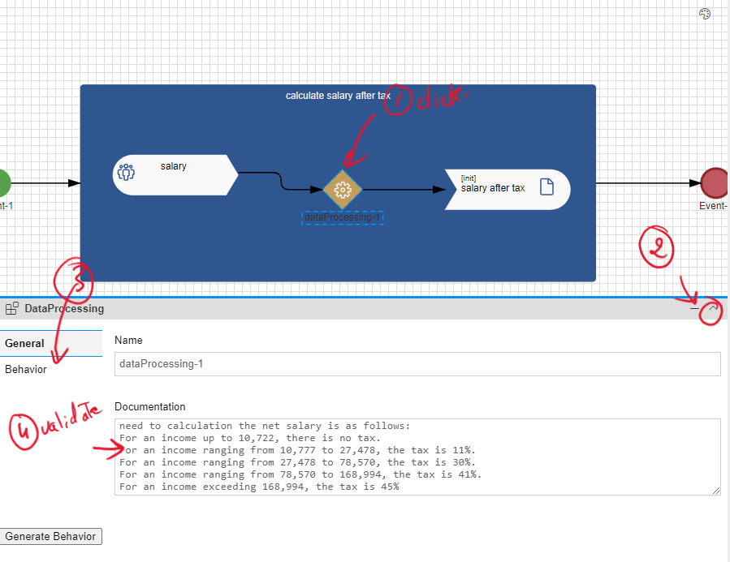
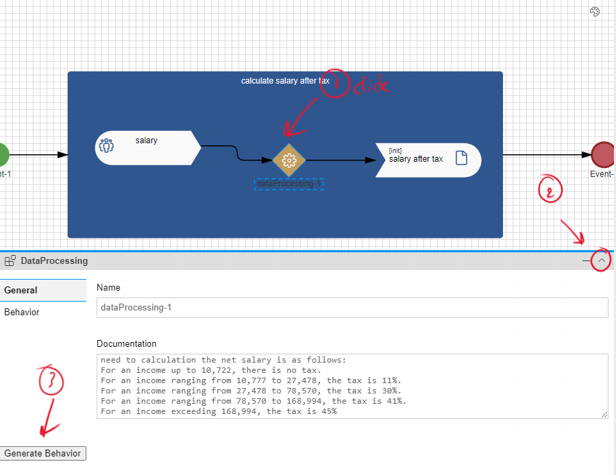
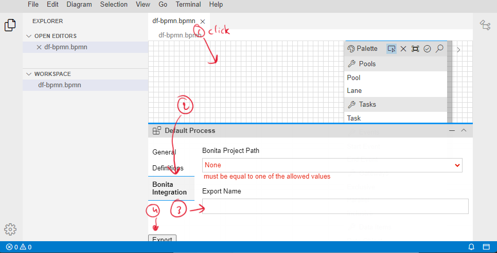
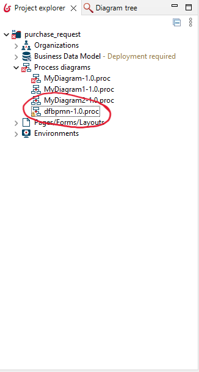

Convert to Bonita
- Before convert to Bonita studio, if you have data processing operator you should validate the the
Behavior of the code is generated.
Note: in this example your are not used the data processing operator.

If the behavior is not generated, you should click on the "generate behavior" and what for some seconds and revalidate the behavior.

-
To export to Bonita, click on withspace, in "Bonita integration" tab, add the name of the exported
project, and click "export", it should take some seconds or some minutes.
 -
You can find a new process diagram within your project in Bonita studio. If the project does not found,
you can refresh the bonita project.

After Converting DF-BPMN to Bonita, there are manual implementation you should do before the execution.
Define Gateways Conditions
-
Gateway after the activity "Review quotation"
The conditions are added to the sequence flow after the gateway.
click on the sequence flow, then click on "General" and then add the expression (conditions).

The expression should be defined based on a variable already defined in the activities, yf you used the the second way in define the process variable (isAccepted) in the last activity, the conditions (script) should be:

in other way, you should add the variable you are based on to define the condition (like, attribute of business data).
Add forms
You should add form only for the activity with type "Human".-
Activity "Create request and select supplier"
-
Activity "Complete quotation"
-
Activity "Review quotation"